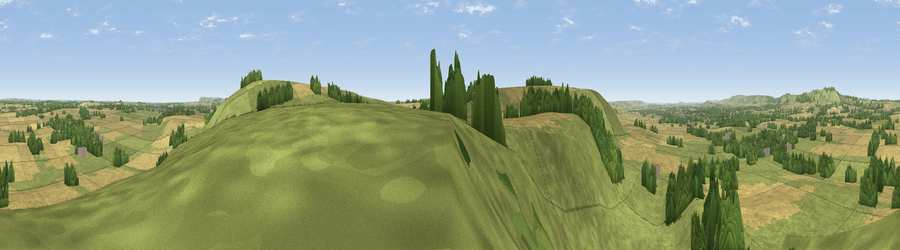

Viewpoint near Milton Lilbourne
#18583 in England · top 32% of its area beats it · near Milton LilbourneThe view, rendered

A 360° render of this exact spot computed from the terrain model, tree cover and land cover — summer colours, afternoon light, calibrated against photographs of famous viewpoints. Real trees, hedges and buildings will differ in detail.
The panorama
Grey silhouette: terrain skyline in each direction (720 bearings, Earth curvature and refraction included). Dashed green: skyline with trees (+15 m) and buildings (+8 m) as obstacles. Blue strip: how far the ground is visible on each bearing.
Where the view opens
Wedge length = distance to the farthest visible ground on that bearing (vegetation-aware). Rings at 10, 25 and 50 km.
What fills the view
59% grassland · 29% cropland · 12% woodland
Angular shares of the visible panorama (visual magnitude), not map area. Landscape diversity 0.41 (0–1 Shannon).
Key numbers
More beautiful places nearby
The staircase of upgrades: each row has a higher view potential than everything closer. Driving times are estimates from straight-line distance, calibrated against real road routing — check an actual route before setting out.
| Place | Direction | Drive | Score |
|---|---|---|---|
| Easton Clump | ESE · 1 km | ~3 min | 64.0 |
| Martinsell viewpoint | NNW · 5 km | ~11 min | 77.3 |
| Viewpoint near Berwick St John | SW · 48 km | ~68 min | 78.2 |
| Viewpoint near Stinchcombe | NW · 60 km | ~83 min | 80.5 |
| Nottingham Hill | NNW · 72 km | ~96 min | 80.9 |
| Beacon Hill | SE · 73 km | ~97 min | 85.8 |
| Mottistone Down | SSE · 78 km | ~102 min | 87.2 |
| Viewpoint near Kimmeridge | SSW · 85 km | ~110 min | 87.5 |
51.33447, -1.71394 · source: screening · position refined by local search. Computed location — check access rights before visiting.